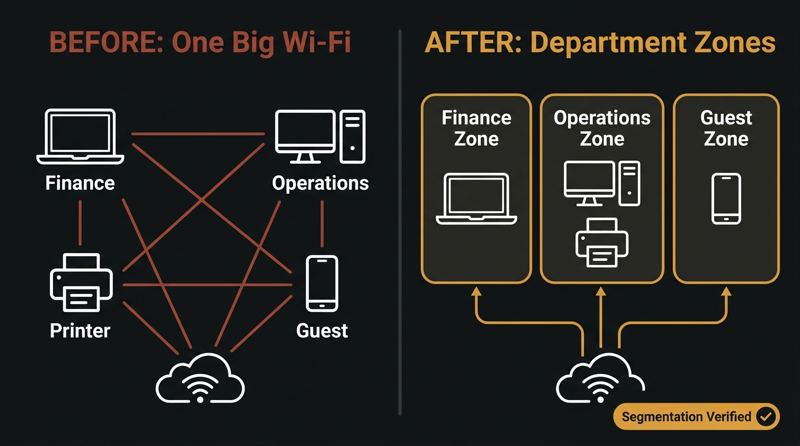

Most security advice assumes two things: you have budget for gear, and you have specialists to run it. For a small or medium network, compliance still asks for the same controls, leaving teams stuck between two bad choices: enterprise tools that are overkill and overpriced, or open-source versions that are hard to use and demand high skill to wire up and maintain.

What Small-Network Compliance Actually Costs
Buying the box is only half the bill. Below are typical market estimates for a 100-person SME (in USD), alongside what it takes in ongoing effort and complexity.
Hardware is a one-time invoice. Rules, routing, and unreadable tools are a permanent tax on people you do not have.
High-Stakes Data, Zero Security Staff
Large companies already carry sunk costs in firewalls, security software licences, and IT retainers, so they tolerate complex, hard-to-use tools.
Non-profits sit on the other side. They hold sensitive donor and beneficiary data that needs real protection, yet they have zero security staff and no margin for tools that slow down daily work.
Building for non-profits first is not charity. It is the hardest cost and usability bar I can set: if my platform delivers real segmentation, host defense, and compliance proof that a small team can actually use without a specialist on staff, the architecture works for everyone else too.
From One Big Wi-Fi to Verifiable Department Zones
One Big Wi-Fi, or Months of Rewiring
- Flat by default: Laptops, printers, finance machines, and guests all share one Wi-Fi.
- Hardware tax: Separating teams means buying managed switches and reconfiguring access points.
- Rule tax: An engineer has to write and maintain routing and firewall rules between departments.
Software Zones Over Existing Wi-Fi
- Leave Wi-Fi untouched: No new switches, no access-point changes, no routing tables.
- Zone by department: Finance reaches Finance tools; Operations stays separate.
- Verify on the spot: Inspect each zone boundary directly to prove segmentation compliance.

Most small offices start on one shared Wi-Fi where laptops, printers, finance machines, and guests all sit together.
CyberSniper leaves that Wi-Fi untouched and gives each department its own private zone. Finance reaches Finance tools, Operations stays separate, and an auditor can check the boundary directly on the spot.
Simplify Usability, and Cost Drops With It
Agentic defense does more than write compliance reports. It sets up and runs the technical controls themselves, without needing expert human labour on staff.
Compliance does not have to mean choosing between overpriced enterprise gear and complex open-source setups.
Designing for teams with zero security staff forces every unnecessary box, rule, and alert out of the way.
When defense is simple enough to run over one shared Wi-Fi, cost stops being the barrier and compliance becomes something you can actually verify.